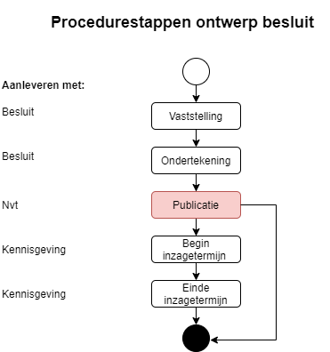
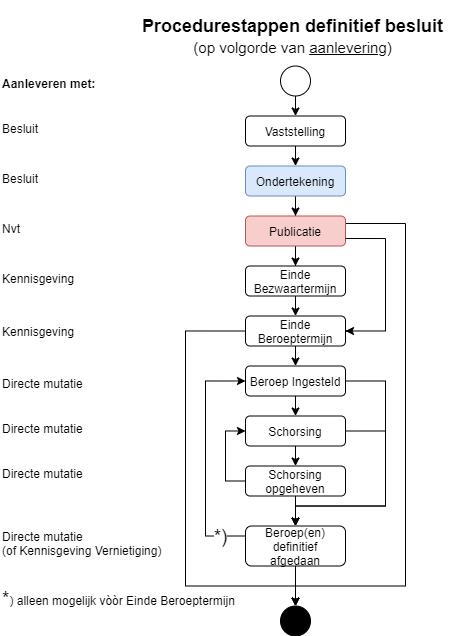

Procedurestap
Voor een goede verwerking van een beroepsprocedure is er in STOP de zogenoemde procedurestap in het procedureverloop. Procedurestappen zijn gebeurtenissen in de procedurele 'levensloop' van een besluit, zoals de ondertekening, publicatie of een schorsing door het beroepsorgaan. Elke procedurestap is de optelsom van alle procedures tegen een besluit. Procedurestappen worden in STOP gebruikt om de herroepelijkheid van een besluit te bepalen.
Een procedurestap bevat de volgende elementen:
soortStap(verplicht): welke stap (procedurele status) bij een besluit hoort. Dit is een waarde uit Waardelijst procedurestap definitief besluit (of Waardelijst procedurestap ontwerpbesluit).Voltooidop(verplicht): de datum waarop deze procedurestap heeft plaatsgevonden of (naar verwachting) plaats zal vinden.actor(optioneel): degene die de stap heeft uitgevoerd.toelichting(optioneel): een verwijzing naar de plaats waar extra informatie over deze stap kan worden gevonden. Bij een schorsing kan dit de webpagina van het BG zijn waar de gevolgen van de uitspraak van de rechter zijn toegelicht.
soortStap | Wanneer? | Herroepelijkheid |
|---|---|---|
| Beroep(en) ingesteld | Als aan het einde van de beroepstermijn één of meerdere beroepen lopen. | Niet onherroepelijk |
| Schorsing | Als in een van de lopende beroepsprocedures tegen het besluit het besluit door de rechter wordt geschorst. | Geschorst |
| Schorsing opgeheven | Als de rechter de schorsing opheft en in geen van de eventueel andere lopende procedures het besluit nog is geschorst. Als de rechter een uitspraak doet waarmee een schorsing wordt opgeheven terwijl er nog procedures lopen waarin het besluit niet is geschorst. | Niet onherroepelijk |
| Beroep(en) definitief afgedaan | Als alle beroepsprocedures zijn afgerond. | Niet onherroepelijk als de beroepstermijn nog niet is verstreken. Onherroepelijk als de beroepstermijn is verstreken. |
Procedureverloop en procedureverloopmutatie
Bij de aanlevering van een besluit levert het BG met de module procedureverloop de procedurestappen die het besluit doorlopen heeft, typisch de Vaststelling en de Ondertekening van het besluit. Het BG is verplicht om een kennisgeving te publiceren indien een beroepstermijn van toepassing is. De kennisgeving bevat een procedureverloopmutatie met daarin de procedurestap Einde beroepstermijn.
Als aan het einde van de beroepstermijn blijkt dat er beroep is aangetekend, geeft het BG de relevante procedurestappen door. Hiervoor gebruikt het BG de directe mutatie met een procedureverloopmutatie.
BekendOp
Ten behoeve van tijdreizen bevat de Procedureverloopmutatie een bekendOp-datum, de datum waarop de aangeleverde informatie publiekelijk bekend werd/wordt. De interpretatie van "publiekelijk bekend" voor de verschillende procedurestappen is als volgt:
| Procedurestap | BekendOp |
|---|---|
| Vaststelling | Publicatiedatum besluit |
| Ondertekening | Publicatiedatum besluit |
| Publicatie | Publicatiedatum besluit |
| Einde Bezwaartermijn | Publicatiedatum kennisgeving |
| Einde beroepstermijn | Publicatiedatum kennisgeving |
| Beroep(en) ingesteld | Datum dat (het eerste) beroep is ingesteld. Indien onbekend, de mutatiedatum, waarbij mutatiedatum < einddatum beroepstermijn. |
| Schorsing | Datum dat rechtbank schorsing uitspreekt |
| Schorsing opgeheven | Datum dat rechtbank schorsing opheft |
| Beroep(en) definitief afgedaan | Datum definitieve uitspraak rechtbank |
Overzicht procedureverloop
De Nederlandse wetgeving kent twee typen besluitprocedures, te weten voor een:
ontwerpbesluit
definitief besluit.
Beide proceduretypes zijn opgebouwd uit procedurestappen. Een aantal stappen komt in beide proceduretypes voor. Een ander deel is komt slechts in één proceduretype voor.
Na de initiële aanlevering van het procedureverloop met een besluit, wordt het procedureverloop gemuteerd door het aanleveren van een kennisgeving of een directe mutatie.
Een toelichting op het muteren van het procedureverloop en de complexiteit die hierbij op kan treden is hier te vinden.
De bedrijfsregels die borgen dat de stappen in de juiste volgorde in een procedureverloop worden opgenomen zijn hier te vinden.
Ontwerpbesluit

De Publicatie-stap wordt toegevoegd door de LVBB. Voor een ontwerp besluit bestaan geen verplichte stappen.
De coderingen van de procedurestappen voor het ontwerpbesluit zijn te vinden op gitlab.
Definitief besluit

Bij de aanlevering van een definitief besluit aan de LVBB is de Ondertekening-stap de enige verplichte stap. De Publicatie-stap wordt toegevoegd door de LVBB. De coderingen van de procedurestappen voor een definitief besluit zijn te vinden op gitlab.
LET OP: De stappen zijn hier getoond in de volgorde van aanlevering. De stappen zelf bevatten een datum voltooidOp waarop de stap is afgerond. Dit vormt een andere volgorde: zo moet de voltooidOp-datum van de stap 'Beroep Ingesteld' vòòr de voltooidOp datum van 'Einde beroepstermijn' liggen.
De stappen 'Schorsing'/'Schorsing opgeheven' en 'Beroep Ingesteld'/'Beroep(en) definitief afgedaan' kunnen als begin en eind van een periode, meerdere keren voorkomen, waarbij 'Schorsing'/'Schorsing opgeheven' binnen een 'Beroep Ingesteld'/'Beroep(en) definitief afgedaan' periode moet liggen.
*) beroep(en) definitief afgedaan
Dat 'Beroep(en) definitief afgedaan' meerdere keren voor kan komen, is toegestaan om beroepen die nog voor het einde van de Beroepstermijn ongegrond worden verklaard, direct door te kunnen geven. Daardoor kan het BG, nadat naar aanleiding van het eerste beroep 'Beroep ingesteld' is doorgegeven, kiezen welke werkwijze zij wil hanteren:
Na het verstrijken van de beroepstermijn bekijken of er lopende beroepen zijn. Zo niet, op dat moment 'Beroep(en) definitief afgedaan' doorgeven.
Indien tijdens de beroepstermijn het eerste (én alle eventueel andere) beroepen niet-ontvankelijk of ongegrond worden verklaard, dan direct 'Beroep(en) definitief afgedaan' doorgeven. Dus nog voor het einde van de beroepstermijn. Mocht er later in de beroepstermijn weer beroep worden aangetekend, dan geeft het BG opnieuw 'Beroep ingesteld' door. Vanzelfsprekend moet het BG dan na het verstrijken van de beroepstermijn opnieuw beoordelen of er lopende beroepen zijn.
Zie ook
Juridische informatie over beroep en de verwerking van beroep in STOP.
Status in de geconsolideerde regeling hoe uit de aangeleverde procedurestappen de status van het besluit wordt afgeleid en uitgeleverd als
BesluitStatus.Verweken uitspraak beroep voor een compleet overzicht van alle stappen van het BG in een beroepsprocedure.
Zie ook de toelichting Herroepelijkheid.
Overzicht van diverse compleet uitgewerkte XML-voorbeelden, waaronder de volgende uitspraakscenario's:
vernietigd
gedeeltelijk vernietigd
vernietigd met behoud van rechtsgevolgen
Bedrijfsregels van toepassing op de procedurestappen.